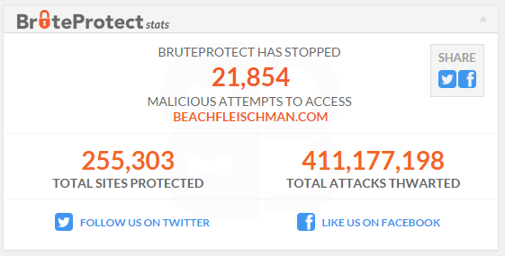

Created by Daniel Bishop / @bishless
The approaches mentioned are not _enough_ but they'll help.
Homework: Seek out 'WordPress Security Best Practices'...
Say NO to standard 'admin' account.
Rename that bad boy.
Always use unique passwords!
Make use of LastPass, 1Password, or something. (best $12/year I spend)
See Brute Force Attacks on the Codex.
a Brute Force Attack aims at being the simplest kind of method to gain access to a site: it tries usernames and passwords, over and over again, until it gets in.
Began life as BruteProtect (sorta like Akismet but for logins... distributed knowledge of bots/botnet attacks); recently integrated into Jetpack (v3.4, March 2015).
for beachfleischman.com
from late January 2014 - February 2015
* - a measure of protection. Again, this is just one piece of the pie.
What if I want to restrict login access to specific IP addresses I use?
If your site runs on Apache, you can add a small .htaccess modification to protect it.
RewriteEngine on
RewriteCond %{REQUEST_URI} ^(.*)?wp-login\.php(.*)$ [OR]
RewriteCond %{REQUEST_URI} ^(.*)?wp-admin$
RewriteCond %{REMOTE_ADDR} !^123\.45\.67\.89$
RewriteCond %{REMOTE_ADDR} !^89\.67\.45\.123$
RewriteRule ^(.*)$ - [R=403,L]
Be CAREFUL! Don't modify your .htaccess file unless you're comfortable, you've taken a backup, AND you know how to restore!
- Again, this isn't everything, but it'll help!
- Slides
- Slides Source